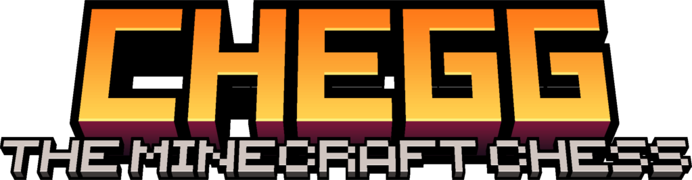
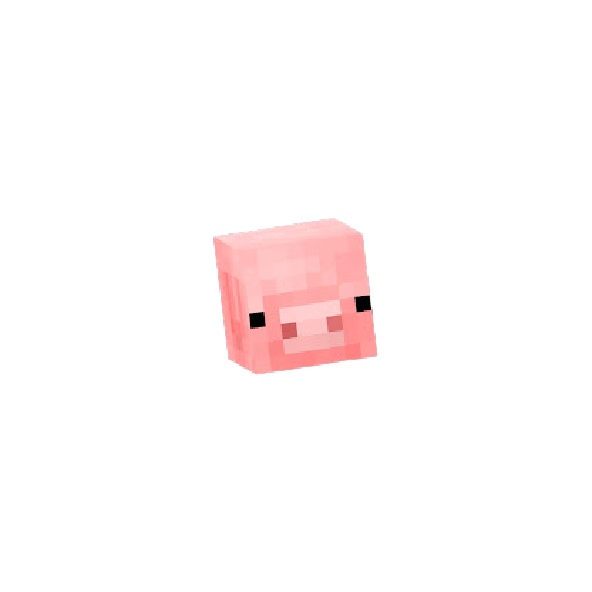

The Game
CHEGG is a creature tactics game inspired by chess movement, Minecraft mobs, mana, and deck-built spawn eggs.
Original rules

Original game by GergYouTube Browser version by Lfzinhoitch.ioSelected mode
CHEGG is a creature tactics game inspired by chess movement, Minecraft mobs, mana, and deck-built spawn eggs.
Original rulesTwo players share this computer. Build decks privately, take turns locally, and use the same board for the whole match.
Between turns, the screen hides the board and hand. Call the other player over, press Ready, then review the replay.
Selected mode
Same CHEGG rules, same creature movement, same deck-built strategy.
Original rulesDesigned for slower games where players exchange turns, like chess by mail or chat.
Each setup step and finished turn creates a CHEGG code. Send it to your opponent, then paste their next code to continue.